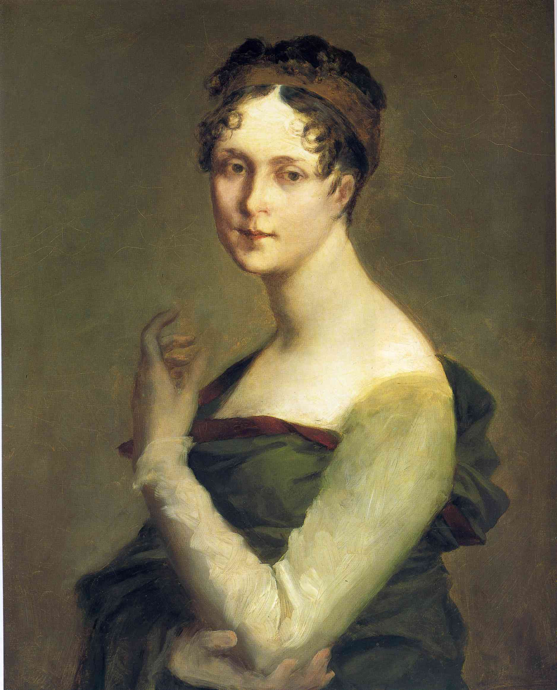

Saturday, November the 8th, 2014
back to: title, date or indexes
In certain letters to his wife Josephine, Napoleon Bonaparte referred to her private parts as “Baron de Kepen”. Nobody knows why (nor who the Baron was).

Joesphine de Beauharnais